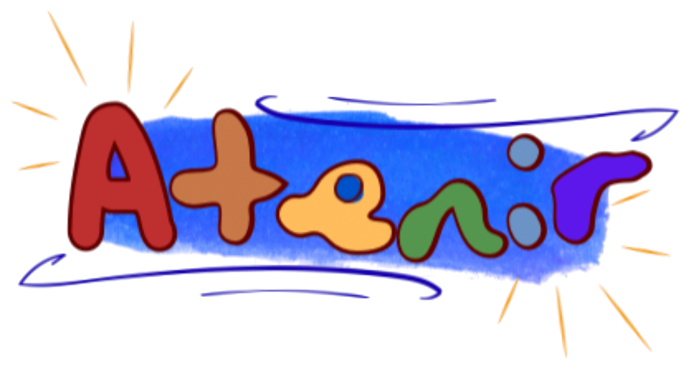

<!doctype html>
<html lang="it">
<head>
<meta charset="utf-8">
<title>Atenir – reel</title>
<link rel="stylesheet" href="design/tokens.css">
<style>
  html, body { margin: 0; background: var(--at-cream); }
  #reel { width: 1080px; height: 1920px; position: relative; overflow: hidden; background: var(--at-cream); }
  .at-scena { position: absolute; inset: 0; overflow: hidden; }
  .at-scena svg.piena { position: absolute; left: 0; top: 0; width: 1080px; height: 1920px; }
  .at-testo { position: absolute; left: var(--at-safe-side); right: var(--at-safe-side); display: flex;
    align-items: center; justify-content: center; text-align: center; text-wrap: balance; color: var(--at-ink); margin: 0; }
  .titolo { font-family: var(--at-font-display); font-size: var(--at-fs-title); font-weight: var(--at-fw-display);
    line-height: var(--at-lh-tight); letter-spacing: var(--at-ls-display); }
  .sotto { font-family: var(--at-font-body); font-size: var(--at-fs-body); font-weight: 800; line-height: 1.2; }
  .macchia { position: absolute; left: 130px; top: 460px; width: 820px; height: 760px; border-radius: var(--at-radius-blob); }
  .at-prodotto { position: absolute; left: 180px; top: 480px; width: 720px; height: 720px; margin: 0; transform-origin: 50% 85%; }
  .at-prodotto .sway { width: 100%; height: 100%; transform-origin: 50% 85%; }
  .at-prodotto svg { width: 100%; height: 100%; overflow: visible; }
  svg .ol { stroke: var(--at-ink); stroke-width: var(--at-stroke); stroke-linejoin: round; stroke-linecap: round; }
  svg .tb { transform-box: fill-box; transform-origin: center; }
  .logo-img { position: absolute; height: auto; display: block; }
  #contatore { position: absolute; top: 254px; left: 0; width: 1080px; height: 28px; z-index: 5; }
  #contatore i { position: absolute; top: 14px; width: 20px; height: 20px; margin: -10px 0 0 -10px; border-radius: 50%;
    background: var(--at-ink); opacity: .25; box-sizing: border-box; }
  #filo-wipe { position: absolute; top: -140px; left: 0; width: 280px; height: 2200px; z-index: 10; visibility: hidden; }
  .pill { position: absolute; left: 260px; top: 1240px; width: 560px; height: 120px; border-radius: 60px; background: var(--at-ink);
    color: var(--at-white); display: flex; align-items: center; justify-content: center; gap: 20px;
    font-family: var(--at-font-body); font-size: var(--at-fs-body); font-weight: 800; }
</style>
</head>
<body>
<!-- Definizioni condivise: texture «punto uncinetto», gradiente arcobaleno -->
<svg width="0" height="0" style="position:absolute" aria-hidden="true">
  <defs>
    <pattern id="at-punto" width="24" height="20" patternUnits="userSpaceOnUse">
      <ellipse cx="7" cy="10" rx="4" ry="8" transform="rotate(-25 7 10)" fill="none" stroke="#2A1D3A" stroke-opacity="0.18" stroke-width="2"/>
      <ellipse cx="17" cy="10" rx="4" ry="8" transform="rotate(25 17 10)" fill="none" stroke="#2A1D3A" stroke-opacity="0.18" stroke-width="2"/>
    </pattern>
    <linearGradient id="at-arcobaleno" gradientUnits="userSpaceOnUse" x1="100" y1="0" x2="980" y2="0">
      <stop offset="0" stop-color="#E2434B"/><stop offset=".1667" stop-color="#F5892A"/><stop offset=".3333" stop-color="#FBC72E"/>
      <stop offset=".5" stop-color="#3DB37A"/><stop offset=".6667" stop-color="#2E9FE0"/><stop offset=".8333" stop-color="#4B55C9"/>
      <stop offset="1" stop-color="#9254DE"/>
    </linearGradient>
  </defs>
</svg>

<main id="reel"></main>

<script>
// ===== Configurazione =====
const HANDLE = '@atenir';      // segnaposto: da confermare prima della pubblicazione
// Foto vere dei prodotti: metti il percorso di un PNG/WebP scontornato (1440x1440, prodotto al centro,
// base a ~85% dell'altezza) al posto di null. Con null si usa l'illustrazione. Tempi e animazioni non cambiano.
const FOTO = { borsa: null, borsetta: null, berretto: null, sciarpotto: null };
const DURATA = 19;             // secondi (570 fotogrammi a 30 fps)
const ARC = ['red', 'orange', 'yellow', 'green', 'blue', 'indigo', 'violet'];
const v = (c) => `var(--at-${c})`;
const fl = (c) => `style="fill:${v(c)}"`;
const st = (c, w) => `style="fill:none;stroke:${v(c)};stroke-width:${w}px"`;
const tex = (d) => `<path d="${d}" fill="url(#at-punto)"/>`;

// ===== Illustrazioni prodotto (viewBox 720x720) =====
const ART = {
  borsa() {
    const corpo = 'M150 300 H570 L540 640 Q540 665 515 665 H205 Q180 665 180 640 Z';
    const frange = [0, 1, 2, 3, 4].map((i) => `<line x1="${448 + i * 6}" y1="318" x2="${438 + i * 6}" y2="362" class="ol" style="stroke:${v('violet')};stroke-width:7px"/>`).join('');
    return `
      <path d="M230 300 C230 110 490 110 490 300" class="ol" style="fill:none;stroke-width:46px"/>
      <path d="M230 300 C230 110 490 110 490 300" ${st('indigo', 34)} stroke-linecap="round"/>
      <clipPath id="clip-borsa"><path d="${corpo}"/></clipPath>
      <path d="${corpo}" class="ol" ${fl('blue')}/>
      <g clip-path="url(#clip-borsa)">
        <rect x="140" y="300" width="440" height="120" ${fl('blue')}/>
        <rect x="140" y="420" width="440" height="120" ${fl('green')}/>
        <rect x="140" y="540" width="440" height="130" ${fl('yellow')}/>
        <rect x="140" y="300" width="440" height="370" fill="url(#at-punto)"/>
      </g>
      <path d="${corpo}" fill="none" class="ol"/>
      <rect x="140" y="284" width="440" height="36" rx="18" class="ol" ${fl('red')}/>
      <rect x="140" y="284" width="440" height="36" rx="18" fill="url(#at-punto)"/>
      <g class="at-dettaglio manico tb">
        <path d="M260 300 C260 150 460 150 460 300" class="ol" style="fill:none;stroke-width:46px"/>
        <path d="M260 300 C260 150 460 150 460 300" ${st('orange', 34)} stroke-linecap="round"/>
      </g>
      <g class="at-dettaglio nappina" style="transform-origin:460px 300px">
        ${frange}<circle cx="460" cy="312" r="14" class="ol" style="stroke-width:6px;fill:${v('violet')}"/>
      </g>`;
  },
  borsetta() {
    const col = [['red', 'yellow', 'blue'], ['orange', 'green', 'violet'], ['yellow', 'indigo', 'red'],
      ['green', 'red', 'orange'], ['blue', 'orange', 'yellow'], ['violet', 'yellow', 'green']];
    let q = '';
    col.forEach((c, i) => {
      const x = 150 + (i % 3) * 140, y = 340 + Math.floor(i / 3) * 150, cx = x + 70, cy = y + 75;
      [140, 96, 52].forEach((s, j) => { q += `<rect x="${cx - s / 2}" y="${cy - s / 2}" width="${s}" height="${s}" rx="10" ${fl(c[j])}/>`; });
    });
    const patta = 'M150 340 H570 A210 110 0 0 1 150 340 Z';
    return `
      <path d="M170 360 C170 80 550 80 550 360" class="ol" style="fill:none;stroke-width:28px"/>
      <path d="M170 360 C170 80 550 80 550 360" ${st('orange', 16)}/>
      <path d="M170 360 C170 80 550 80 550 360" style="fill:none;stroke:#2A1D3A;stroke-opacity:.3;stroke-width:16px;stroke-dasharray:2 18"/>
      <clipPath id="clip-borsetta"><rect x="150" y="340" width="420" height="300" rx="28"/></clipPath>
      <rect x="150" y="340" width="420" height="300" rx="28" class="ol" ${fl('cream')}/>
      <g clip-path="url(#clip-borsetta)">${q}
        <path d="M290 340 V640 M430 340 V640 M150 490 H570" style="stroke:${v('cream')};stroke-width:6px"/>
        <rect x="150" y="340" width="420" height="300" fill="url(#at-punto)"/>
      </g>
      <rect x="150" y="340" width="420" height="300" rx="28" fill="none" class="ol"/>
      <g class="at-dettaglio patta" style="transform-origin:360px 340px">
        <path d="${patta}" class="ol" ${fl('red')}/>${tex(patta)}
        <g class="bottone tb">
          <circle cx="360" cy="440" r="20" class="ol" style="stroke-width:6px;fill:${v('yellow')}"/>
          <circle cx="353" cy="433" r="3" ${fl('ink')}/><circle cx="367" cy="433" r="3" ${fl('ink')}/>
          <circle cx="353" cy="447" r="3" ${fl('ink')}/><circle cx="367" cy="447" r="3" ${fl('ink')}/>
        </g>
      </g>`;
  },
  berretto() {
    const cupola = 'M130 520 C130 200 590 200 590 520 Z';
    const onda = (y) => { let d = `M100 ${y}`; for (let x = 100; x < 620; x += 40) d += ` q20 -14 40 0`; return d; };
    let coste = '';
    for (let x = 134; x <= 586; x += 24) coste += `<line x1="${x}" y1="522" x2="${x}" y2="618" style="stroke:#2A1D3A;stroke-opacity:.2;stroke-width:4px"/>`;
    const bordi = Array.from({ length: 20 }, (_, i) => {
      const a = (i * 18 * Math.PI) / 180; return [360 + 80 * Math.cos(a), 215 + 80 * Math.sin(a)];
    });
    const cerchi = (cl) => `<circle cx="360" cy="215" r="80" ${cl}/>` + bordi.map(([x, y]) => `<circle cx="${x.toFixed(1)}" cy="${y.toFixed(1)}" r="17" ${cl}/>`).join('');
    const peli = Array.from({ length: 8 }, (_, i) => {
      const a = ((i * 45 + 20) * Math.PI) / 180;
      return `<line x1="${(360 + 40 * Math.cos(a)).toFixed(1)}" y1="${(215 + 40 * Math.sin(a)).toFixed(1)}" x2="${(360 + 64 * Math.cos(a)).toFixed(1)}" y2="${(215 + 64 * Math.sin(a)).toFixed(1)}" style="stroke:${v('orange')};stroke-width:3px;stroke-linecap:round"/>`;
    }).join('');
    return `
      <clipPath id="clip-cupola"><path d="${cupola}"/></clipPath>
      <path d="${cupola}" class="ol" ${fl('red')}/>
      <g clip-path="url(#clip-cupola)">
        ${tex(cupola)}
        <path d="${onda(360)}" ${st('yellow', 10)}/><path d="${onda(420)}" ${st('green', 10)}/><path d="${onda(480)}" ${st('blue', 10)}/>
      </g>
      <path d="${cupola}" fill="none" class="ol"/>
      <rect x="110" y="510" width="500" height="120" rx="30" class="ol" ${fl('violet')}/>
      ${coste}
      <g class="at-dettaglio pompon" style="transform-origin:360px 295px">
        ${cerchi(`class="ol" ${fl('yellow')}`)}${cerchi(fl('yellow'))}
        <circle cx="360" cy="215" r="90" fill="url(#at-punto)"/>${peli}
      </g>`;
  },
  sciarpotto() {
    const asse = 'M120 160 C420 160 560 300 360 380 C160 460 300 600 600 600';
    const righe = [[158, 'ink'], [150, 'red'], [128, 'orange'], [106, 'yellow'], [84, 'green'], [62, 'blue'], [40, 'indigo'], [18, 'violet']]
      .map(([w, c]) => `<path class="riga" d="${asse}" pathLength="1" style="fill:none;stroke:${v(c)};stroke-width:${w}px;stroke-linecap:butt;stroke-dasharray:1 1"/>`).join('')
      + `<path class="riga" d="${asse}" pathLength="1" style="fill:none;stroke:url(#at-punto);stroke-width:150px;stroke-linecap:butt;stroke-dasharray:1 1"/>`;
    const frangia = (x0, dx, y0, cl, orig) => `<g class="at-dettaglio ${cl}" style="transform-origin:${orig}">` +
      Array.from({ length: 9 }, (_, i) => {
        const y = y0 - 66 + i * 16.5;
        return `<line x1="${x0}" y1="${y}" x2="${x0 + dx}" y2="${y}" style="stroke:${v(ARC[i % 7])};stroke-width:10px;stroke-linecap:round"/>`;
      }).join('') + '</g>';
    return frangia(116, -70, 160, 'frange-a', '120px 160px') + frangia(604, 70, 600, 'frange-b', '600px 600px') + righe;
  },
};

// Foto se presente, altrimenti illustrazione SVG (con id dei clipPath resi unici per le miniature).
function contenuto(slot, etichetta, prefisso = 'clip-') {
  if (FOTO[slot]) return ``;
  const svg = ART[slot]().replace(/id="clip-/g, `id="${prefisso}`).replace(/url\(#clip-/g, `url(#${prefisso}`);
  return `<svg viewBox="0 0 720 720" ${etichetta ? `role="img" aria-label="${etichetta}"` : 'aria-hidden="true"'} style="width:100%;height:100%;overflow:visible">${svg}</svg>`;
}

// ===== Costruzione delle scene =====
const reel = document.getElementById('reel');
const scena = (id, bg, html) => {
  const s = document.createElement('section');
  s.className = 'at-scena'; s.id = id; s.style.background = v(bg); s.innerHTML = html;
  reel.appendChild(s); return s;
};

// Scena 1 – aggancio
const coriandoli = [[120, 300], [330, 420], [610, 280], [860, 380], [960, 560], [180, 560], [760, 1230], [940, 1340], [520, 1460], [110, 1210]];
scena('s1-aggancio', 'cream', `
  <svg class="piena" viewBox="0 0 1080 1920">
    ${coriandoli.map(([x, y], i) => `<path class="coriandolo tb" d="M${x - 12} ${y - 10} L${x} ${y + 10} L${x + 12} ${y - 10}" style="fill:none;stroke:${v(ARC[i % 7])};stroke-width:7px;stroke-linecap:round;stroke-linejoin:round;opacity:.7"/>`).join('')}
    <path id="filo1" d="M300 1320 C430 1300 200 1290 120 1240 C40 1190 200 1120 130 1060 C60 1000 90 900 175 840"
      pathLength="1" style="fill:none;stroke:url(#at-arcobaleno);stroke-width:18px;stroke-linecap:round;stroke-dasharray:1 1"/>
    <g id="gomitolo-in"><g id="gomitolo-rot" class="tb"><g id="gomitolo-scala" class="tb">
      <clipPath id="clip-gom"><circle cx="230" cy="1360" r="100"/></clipPath>
      <circle cx="230" cy="1360" r="100" ${fl('violet')}/>
      <g clip-path="url(#clip-gom)">
        ${[0, 35, 70, 110, 150].map((a, i) => `<ellipse cx="230" cy="1360" rx="100" ry="38" transform="rotate(${a} 230 1360)" ${st(ARC[i], 14)}/>`).join('')}
        <circle cx="230" cy="1360" r="100" fill="url(#at-punto)"/>
      </g>
      <circle cx="230" cy="1360" r="100" fill="none" class="ol"/>
    </g></g></g>
  </svg>
  
  <p class="at-testo titolo" id="tag1" style="top:1080px;height:200px">Un filo.<br>Mille colori.</p>`);

// Scene 2–5 – categorie
const CATEGORIE = [
  { id: 's2-borse', slot: 'borsa', bg: 'yellow', macchia: 'cream', titolo: 'Borse', sotto: 'Capienti, morbide, tue.', dot: 'blue' },
  { id: 's3-borsette', slot: 'borsetta', bg: 'green', macchia: 'cream', titolo: 'Borsette', sotto: 'Piccole, piene di carattere.', dot: 'violet' },
  { id: 's4-berretti', slot: 'berretto', bg: 'orange', macchia: 'cream', titolo: 'Berretti', sotto: 'Caldi, con il pompon.', dot: 'red' },
  { id: 's5-sciarpotti', slot: 'sciarpotto', bg: 'cream', macchia: 'yellow', titolo: 'Sciarpotti', sotto: 'Da avvolgere. Da sfoggiare.', dot: 'green' },
];
CATEGORIE.forEach((c) => scena(c.id, c.bg, `
  <div class="macchia" style="background:${v(c.macchia)}"></div>
  <figure class="at-prodotto" data-slot="${c.slot}"><div class="sway">${contenuto(c.slot, c.titolo)}</div></figure>
  <p class="at-testo titolo" style="top:1240px;height:140px">${c.titolo}</p>
  <p class="at-testo sotto" style="top:1400px;height:100px">${c.sotto}</p>`));

// Scena 6 – valore
let catenella = 'M785 340 C900 420 905 590 880 640';
for (let i = 0; i < 6; i++) { const x = 880 - i * 113; catenella += ` C${x + 12} 560 ${x - 125} 560 ${x - 113} 640`; }
scena('s6-valore', 'indigo', `
  <svg class="piena" viewBox="0 0 1080 1920">
    <path id="catenella" d="${catenella}" pathLength="1" style="fill:none;stroke:url(#at-arcobaleno);stroke-width:14px;stroke-linecap:round;stroke-linejoin:round;stroke-dasharray:1 1"/>
    <g id="uncinetto-in"><g id="uncinetto" transform="rotate(-30 560 470)">
      <rect x="300" y="459" width="520" height="22" rx="11" ${fl('cream')}/>
      <path d="M808 470 a16 16 0 1 0 -6 -26" style="fill:none;stroke:${v('cream')};stroke-width:12px;stroke-linecap:round"/>
      <rect x="320" y="452" width="150" height="36" rx="18" ${fl('yellow')}/>
    </g></g>
    <g id="timbro" class="tb" style="rotate:-10deg">
      <circle cx="540" cy="1260" r="120" ${fl('yellow')}/>
      <circle cx="540" cy="1260" r="110" style="fill:none;stroke:${v('ink')};stroke-width:4px;stroke-dasharray:10 8"/>
      <text x="540" y="1286" text-anchor="middle" class="at-testo-svg" style="font-family:var(--at-font-display);font-weight:700;font-size:76px;fill:${v('ink')}">1 su 1</text>
    </g>
  </svg>
  <p class="at-testo titolo" id="fatto" style="top:760px;height:140px;color:${v('white')}">Fatto a mano</p>
  <p class="at-testo titolo" id="unico" style="top:920px;height:140px;color:${v('cream')}">Pezzo unico</p>`);

// Scena 7 – invito all'azione
const mini = CATEGORIE.map((c, i) => `<div class="mini" style="position:absolute;left:${240 + i * 180 - 75}px;top:1390px;width:150px;height:150px">
  ${contenuto(c.slot, '', 'mclip-')}</div>`).join('');
scena('s7-cta', 'cream', `
  <svg class="piena" viewBox="0 0 1080 1920">
    ${[400, 360, 320, 280, 240, 200, 160].map((r, i) => `<path class="arco" d="M${540 - r} 640 A${r} ${r} 0 0 1 ${540 + r} 640" pathLength="1" style="fill:none;stroke:${v(ARC[i])};stroke-width:36px;stroke-linecap:round;stroke-dasharray:1 1"/>`).join('')}
  </svg>
  
  <p class="at-testo sotto" id="scegli" style="top:1010px;height:80px">Scegli il tuo colore</p>
  <p class="at-testo titolo" id="handle" style="top:1085px;height:130px"></p>
  <div class="pill at-testo" id="pill" style="left:260px;right:auto">
    <svg id="freccia" width="40" height="40" viewBox="0 0 40 40"><path d="M20 34 V6 M8 18 L20 6 L32 18" style="fill:none;stroke:${v('yellow')};stroke-width:6px;stroke-linecap:round;stroke-linejoin:round"/></svg>
    <span>Link in bio</span>
  </div>
  ${mini}`);
document.getElementById('handle').textContent = HANDLE;

// Contatore e transizione condivisi
reel.insertAdjacentHTML('beforeend', `<div id="contatore">${[486, 522, 558, 594].map((x) => `<i style="left:${x}px"></i>`).join('')}</div>
  <svg id="filo-wipe" viewBox="0 0 280 2200"><clipPath id="clip-nastro"><rect width="280" height="2200" rx="140"/></clipPath>
  <g clip-path="url(#clip-nastro)">${ARC.map((c, i) => `<rect x="${i * 40}" width="40" height="2200" ${fl(c)}/>`).join('')}<rect width="280" height="2200" fill="url(#at-punto)"/></g></svg>`);

// ===== Motore di animazione deterministico =====
const E = { out: 'cubic-bezier(0.33,1,0.68,1)', back: 'cubic-bezier(0.34,1.56,0.64,1)', inout: 'cubic-bezier(0.65,0,0.35,1)',
  in: 'cubic-bezier(0.32,0,0.67,0)', sine: 'cubic-bezier(0.37,0,0.63,1)', lin: 'linear' };
const $$ = (sel, root = document) => (typeof sel === 'string' ? [...root.querySelectorAll(sel)] : [sel]).filter(Boolean);
function A(sel, kf, start, dur, ease = 'out', o = {}) {
  $$(sel, o.root).forEach((el, i) => el.animate(kf, {
    delay: (start + (o.stagger || 0) * i) * 1000, duration: dur * 1000, easing: E[ease],
    fill: o.fill || 'both', iterations: o.it || 1, direction: o.dir || 'normal',
  }));
}
const txtIn = (el, t, root) => A(el, [{ opacity: 0, translate: '0 40px' }, { opacity: 1, translate: '0 0' }], t, 0.3, 'out', { root });
const txtOut = (el, t, dur = 0.2, root) => A(el, [{ opacity: 1, translate: '0 0' }, { opacity: 0, translate: '0 -24px' }], t, dur, 'in', { root, fill: 'forwards' });
const oscilla = (el, prop, a, b, t, periodo, root) => A(el, [{ [prop]: a }, { [prop]: b }], t, periodo / 2, 'sine', { root, it: Infinity, dir: 'alternate', fill: 'forwards' });

// Scena 1
A('#gomitolo-in', [{ translate: '-350px 100px', rotate: '-360deg' }, { translate: '0 0', rotate: '0deg' }], 0, 0.6, 'out');
document.getElementById('gomitolo-in').style.cssText = 'transform-box:fill-box;transform-origin:center';
A('#gomitolo-rot', [{ rotate: '0deg' }, { rotate: '-256.5deg' }], 0.15, 2.85, 'lin');
A('#gomitolo-scala', [{ scale: 1 }, { scale: 0.85 }], 0.15, 1.4, 'lin');
A('.coriandolo', [{ scale: 0 }, { scale: 1 }], 0, 0.3, 'back', { stagger: 0.04 });
A('#filo1', [{ strokeDashoffset: 1 }, { strokeDashoffset: 0 }], 0.15, 0.6, 'inout');
// Il logo dell'utente viene «scritto» da sinistra a destra, come se lo tracciasse il filo.
A('#logo1', [{ clipPath: 'inset(0 100% 0 0)' }, { clipPath: 'inset(0 0% 0 0)' }], 0.55, 0.8, 'inout');
A('#logo1', [{ scale: 1 }, { scale: 1.06 }, { scale: 1 }], 1.35, 0.35, 'back', { fill: 'forwards' });
txtIn('#tag1', 0.9);

// Scene 2–5
CATEGORIE.forEach((c, k) => {
  const T = 3 + k * 2.5, root = document.getElementById(c.id), q = (s) => root.querySelector(s);
  A(q('.macchia'), [{ scale: 0.85, rotate: '-4deg' }, { scale: 1, rotate: '0deg' }], T, 0.5, 'out');
  const fig = q('.at-prodotto');
  if (c.slot === 'sciarpotto' && !FOTO[c.slot]) {
    A(fig, [{ opacity: 0 }, { opacity: 1 }], T + 0.05, 0.15, 'lin');
    A('.riga', [{ strokeDashoffset: 1 }, { strokeDashoffset: 0 }], T + 0.05, 0.8, 'inout', { root });
    A('.frange-a, .frange-b', [{ opacity: 0 }, { opacity: 1 }], T + 0.8, 0.15, 'lin', { root });
    root.querySelectorAll('.frange-a, .frange-b').forEach((g) => {
      const w = document.createElementNS('http://www.w3.org/2000/svg', 'g'); w.style.transformOrigin = g.style.transformOrigin;
      g.replaceWith(w); w.appendChild(g); g.style.transformOrigin = '';
      oscilla(w, 'rotate', '-6deg', '6deg', T + 0.8, 1.2);
    });
  } else {
    A(fig, [{ scale: 0.6, rotate: '-8deg', opacity: 0 }, { scale: 1, rotate: '0deg', opacity: 1 }], T + 0.05, 0.5, 'back');
  }
  A(q('.sway'), [{ rotate: '0deg' }, { rotate: '2deg', easing: 'ease-out' }, { rotate: '0deg', easing: 'ease-in' }, { rotate: '-2deg', easing: 'ease-out' }, { rotate: '0deg', easing: 'ease-in' }], T + 0.55, 1.6, 'lin', { it: Infinity, fill: 'forwards' });
  if (c.slot === 'borsa') {
    oscilla(q('.manico'), 'translate', '0 0', '0 -10px', T + 0.55, 1.6);
    oscilla(q('.nappina'), 'rotate', '-10deg', '10deg', T + 0.55, 0.8);
  } else if (c.slot === 'borsetta') {
    A(q('.patta'), [{ scale: '1 1' }, { scale: '1 0.9' }, { scale: '1 1' }], T + 0.6, 0.6, 'out', { fill: 'forwards' });
    A(q('.bottone'), [{ scale: 1 }, { scale: 1.15 }, { scale: 1 }], T + 1.2, 0.3, 'back', { fill: 'forwards' });
  } else if (c.slot === 'berretto') {
    const salto = [{ translate: '0 0', scale: '1 1' }, { translate: '0 -28px', scale: '0.92 1.08', offset: 0.35 },
      { translate: '0 0', scale: '1.06 0.94', offset: 0.7 }, { translate: '0 0', scale: '1 1', offset: 0.875 }, { translate: '0 0', scale: '1 1' }];
    A(q('.pompon'), salto, T + 0.6, 0.8, 'lin', { it: 2, fill: 'forwards' });
  }
  const [tit, sot] = root.querySelectorAll('.at-testo');
  txtIn(tit, T + 0.15); txtIn(sot, T + 0.25);
  txtOut(tit, T + 2.05); txtOut(sot, T + 2.05);
});

// Scena 6
A('#uncinetto-in', [{ translate: '160px -120px', rotate: '-20deg', opacity: 0 }, { translate: '0 0', rotate: '0deg', opacity: 1 }], 13, 0.4, 'out');
document.getElementById('uncinetto-in').style.cssText = 'transform-box:fill-box;transform-origin:center';
A('#catenella', [{ strokeDashoffset: 1 }, { strokeDashoffset: 0 }], 13.1, 0.9, 'inout');
oscilla('#uncinetto-in > g', 'translate', '0 0', '-12px 8px', 13.4, 0.9);
txtIn('#fatto', 13.15); txtIn('#unico', 13.3);
A('#timbro', [{ scale: 1.6, rotate: '-30deg', opacity: 0 }, { scale: 1, rotate: '-10deg', opacity: 1 }], 13.9, 0.35, 'back');
['#fatto', '#unico', '#timbro'].forEach((s) => txtOut(s, 15.1, 0.15));

// Scena 7
A('.arco', [{ strokeDashoffset: 1 }, { strokeDashoffset: 0 }], 15.5, 0.6, 'out', { stagger: 0.05 });
A('#logo7', [{ scale: 0.8, opacity: 0 }, { scale: 1, opacity: 1 }], 15.7, 0.4, 'back');
txtIn('#scegli', 15.85); txtIn('#handle', 16.0);
A('#pill', [{ translate: '0 60px', opacity: 0 }, { translate: '0 0', opacity: 1 }], 16.2, 0.4, 'back');
A('.mini', [{ scale: 0.6, rotate: '-8deg', opacity: 0 }, { scale: 1, rotate: '0deg', opacity: 1 }], 16.4, 0.4, 'back', { stagger: 0.08 });
oscilla('#pill', 'scale', 1, 1.04, 17, 1.2);
oscilla('#freccia', 'translate', '0 0', '0 -8px', 17, 1.2);

// ===== Parti calcolate a mano a ogni fotogramma: transizioni e contatore =====
function bez(x1, y1, x2, y2) {
  return (x) => {
    if (x <= 0) return 0; if (x >= 1) return 1;
    let lo = 0, hi = 1, t = 0.5;
    for (let i = 0; i < 40; i++) { t = (lo + hi) / 2; const cx = 3 * x1 * t * (1 - t) ** 2 + 3 * x2 * t * t * (1 - t) + t ** 3; if (cx < x) lo = t; else hi = t; }
    return 3 * y1 * t * (1 - t) ** 2 + 3 * y2 * t * t * (1 - t) + t ** 3;
  };
}
const inout = bez(0.65, 0, 0.35, 1), back = bez(0.34, 1.56, 0.64, 1);
const scene = [...document.querySelectorAll('.at-scena')];
const WIPE = [2.75, 5.25, 7.75, 10.25, 12.75, 15.25];  // inizio transizione verso la scena k+1
const nastro = document.getElementById('filo-wipe');
const punti = [...document.querySelectorAll('#contatore i')];
const contatore = document.getElementById('contatore');

function disegnaManuale(t) {
  let nastroX = null;
  scene.forEach((s, k) => {
    if (k === 0) { s.style.visibility = t < WIPE[0] + 0.5 ? 'visible' : 'hidden'; return; }
    const s0 = WIPE[k - 1], fineSucc = k < WIPE.length ? WIPE[k] + 0.5 : Infinity;
    if (t < s0 || t >= fineSucc) { s.style.visibility = 'hidden'; return; }
    s.style.visibility = 'visible';
    const p = inout((t - s0) / 0.5), left = -300 + 1400 * p, X = left + 140;
    s.style.clipPath = p >= 1 ? 'none' : `inset(0 ${Math.max(0, 1080 - X).toFixed(1)}px 0 0)`;
    if (t < s0 + 0.5) nastroX = left;
  });
  nastro.style.visibility = nastroX === null ? 'hidden' : 'visible';
  if (nastroX !== null) nastro.style.transform = `translateX(${nastroX.toFixed(1)}px)`;

  const op = t < 3 || t >= 12.95 ? 0 : Math.min(1, (t - 3) / 0.25, (12.95 - t) / 0.2);
  contatore.style.opacity = op.toFixed(3);
  const att = Math.max(0, Math.min(3, Math.floor((t - 3) / 2.5)));
  const pop = 0.7 + 0.3 * back(Math.min(1, Math.max(0, (t - 3 - att * 2.5) / 0.3)));
  punti.forEach((d, i) => {
    const on = i === att;
    d.style.opacity = on ? 1 : 0.25;
    d.style.width = d.style.height = on ? '28px' : '20px';
    d.style.margin = on ? '-14px 0 0 -14px' : '-10px 0 0 -10px';
    d.style.background = on ? v(CATEGORIE[i].dot) : v('ink');
    d.style.border = on ? `3px solid ${v('ink')}` : 'none';
    d.style.transform = on ? `scale(${pop.toFixed(3)})` : 'none';
  });
}

window.DURATA = DURATA;
window.atSeek = window.vaiA = function (t) {
  t = Math.max(0, Math.min(DURATA - 1e-6, t));
  document.getAnimations().forEach((a) => { a.pause(); a.currentTime = t * 1000; });
  disegnaManuale(t);
};
// Anteprima nel browser: ?play riproduce in tempo reale; altrimenti ?t=<secondi> mostra un istante.
const qs = new URLSearchParams(location.search);
if (qs.has('play')) { const t0 = performance.now(); const giro = () => { vaiA(((performance.now() - t0) / 1000) % DURATA); requestAnimationFrame(giro); }; giro(); }
else vaiA(Number(qs.get('t') || 0));
</script>
</body>
</html>
